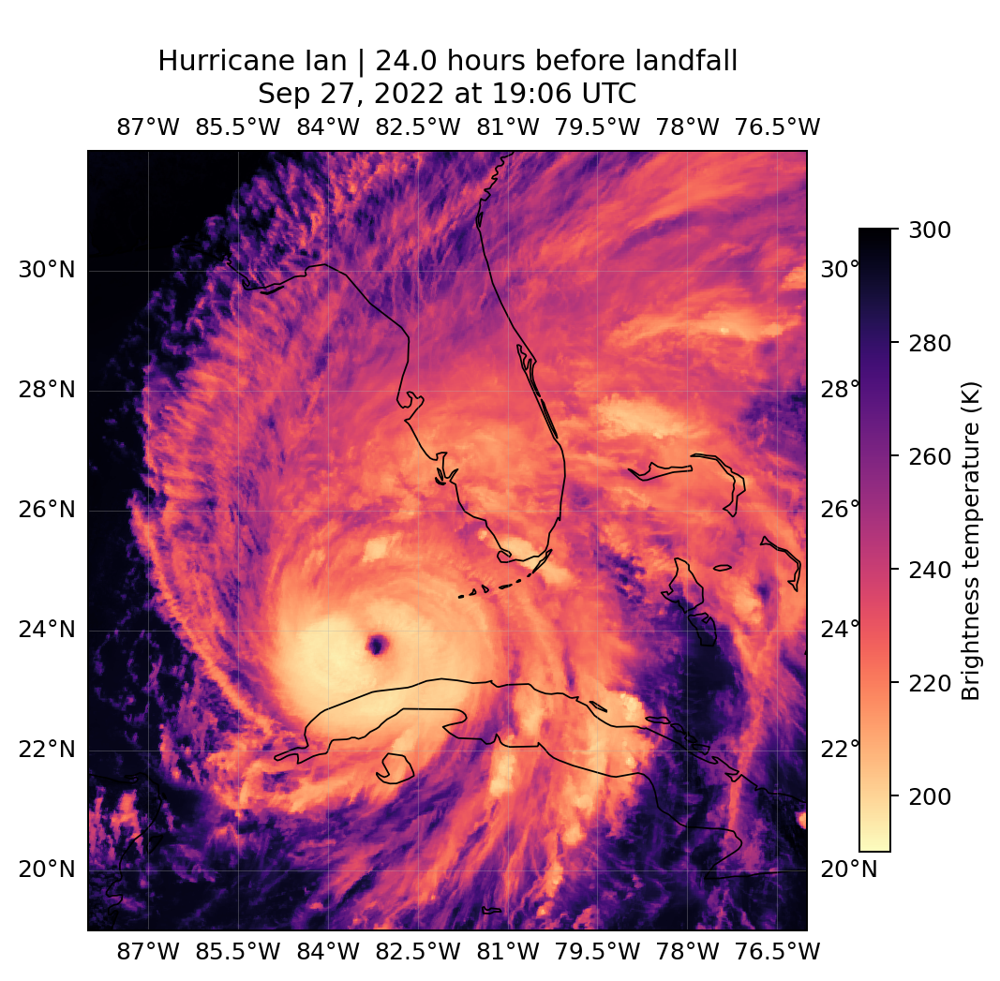

DSC 106 · INITIAL PROTOTYPE
Tracking Hurricane Ian
24 Hours Before Landfall · September 27–28, 2022
Project Overview
How did Hurricane Ian’s cloud patterns change as it approached southwest Florida? We explore GOES-16 infrared satellite imagery over a consistent geographic region, comparing the storm approximately 24, 12, and 0.1 hours before landfall. Brighter areas in these images correspond to lower brightness temperatures, which can help reveal high, cold cloud tops.
Explore the Satellite Images
Move the slider to compare three snapshots of Hurricane Ian as it approached landfall.

All images use the same geographic extent and brightness-temperature color scale (190–300 K). Images are three sampled times, not a continuous animation.
Prototype Progress
What have we done so far?
We selected NOAA GOES-16 satellite data to study Hurricane Ian before its September 2022 landfall. We defined a consistent geographic region covering the storm and southwest Florida. We processed infrared brightness-temperature observations and created static satellite maps for three points in time. We also explored temperature thresholds and changes in cold-cloud area, and this prototype turns the three maps into a working interactive comparison.
What will be the most challenging part of the project to design, and why?
One challenge will be making changes across time easy to compare without overwhelming viewers. Satellite images contain a lot of visual detail, so we need clear labels and a consistent color scale. Another challenge will be connecting the satellite images to a cold-cloud area line chart so that both views show the same selected time. We will also need to explain brightness temperature and threshold choices in simple terms so viewers can interpret the patterns correctly.